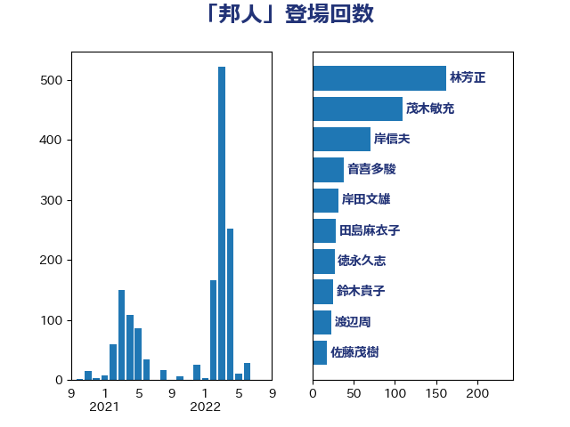

単語「邦人」

| 林芳正 | 自由民主党 | 162 回 |
| 茂木敏充 | 自由民主党 | 109 回 |
| 岸信夫 | 自由民主党 | 71 回 |
| 音喜多駿 | 日本維新の会 | 38 回 |
| 岸田文雄 | 自由民主党 | 32 回 |
| 田島麻衣子 | 立憲民主党 | 29 回 |
| 徳永久志 | 立憲民主党 | 27 回 |
| 鈴木貴子 | 自由民主党 | 25 回 |
| 渡辺周 | 立憲民主党 | 23 回 |
| 佐藤茂樹 | 公明党 | 18 回 |
| 大西健介 | 立憲民主党 | 17 回 |
| 高橋光男 | 公明党 | 16 回 |
| 鷲尾英一郎 | 自由民主党 | 16 回 |
| 本田太郎 | 自由民主党 | 15 回 |
| 松野博一 | 自由民主党 | 13 回 |
| 國場幸之助 | 自由民主党 | 12 回 |
| 清水貴之 | 日本維新の会 | 12 回 |
| 美延映夫 | 日本維新の会 | 12 回 |
| 伊藤俊輔 | 立憲民主党 | 11 回 |
| 和田有一朗 | 日本維新の会 | 11 回 |
| 浅田均 | 日本維新の会 | 11 回 |
| 吉田宣弘 | 公明党 | 10 回 |
| 足立康史 | 日本維新の会 | 10 回 |
| 鈴木庸介 | 立憲民主党 | 10 回 |
| 加藤勝信 | 自由民主党 | 9 回 |
| 杉本和巳 | 日本維新の会 | 9 回 |
| 杉田水脈 | 自由民主党 | 9 回 |
| 松島みどり | 自由民主党 | 9 回 |
| 牧山ひろえ | 立憲民主党 | 9 回 |
| 芳賀道也 | 国民民主党 | 9 回 |
| 赤嶺政賢 | 日本共産党 | 9 回 |
| 太栄志 | 立憲民主党 | 8 回 |
| 米山隆一 | 立憲民主党 | 8 回 |
| 高市早苗 | 自由民主党 | 8 回 |
| 高木啓 | 自由民主党 | 8 回 |
| 佐藤正久 | 自由民主党 | 7 回 |
| 磯崎仁彦 | 自由民主党 | 7 回 |
| 菅義偉 | 自由民主党 | 7 回 |
| 西村康稔 | 自由民主党 | 7 回 |
| 井上哲士 | 日本共産党 | 6 回 |
| 伊波洋一 | 無所属 | 6 回 |
| 朝日健太郎 | 自由民主党 | 6 回 |
| 浦野靖人 | 日本維新の会 | 6 回 |
| 鈴木英敬 | 自由民主党 | 6 回 |
| 小野田紀美 | 自由民主党 | 5 回 |
| 岩谷良平 | 日本維新の会 | 5 回 |
| 川合孝典 | 国民民主党 | 5 回 |
| 玄葉光一郎 | 立憲民主党 | 5 回 |
| 福山哲郎 | 立憲民主党 | 5 回 |
| 義家弘介 | 自由民主党 | 5 回 |
| 羽田次郎 | 立憲民主党 | 5 回 |
| 辻清人 | 自由民主党 | 5 回 |
| 鈴木憲和 | 自由民主党 | 5 回 |
| 青木愛 | 立憲民主党 | 5 回 |
| 小野泰輔 | 日本維新の会 | 4 回 |
| 平井卓也 | 自由民主党 | 4 回 |
| 木原誠二 | 自由民主党 | 4 回 |
| 本村伸子 | 日本共産党 | 4 回 |
| 田村憲久 | 自由民主党 | 4 回 |
| 田畑裕明 | 自由民主党 | 4 回 |
| 矢倉克夫 | 公明党 | 4 回 |
| 萩生田光一 | 自由民主党 | 4 回 |
| 藤岡隆雄 | 立憲民主党 | 4 回 |
| 西岡秀子 | 国民民主党 | 4 回 |
| 馬場成志 | 自由民主党 | 4 回 |
| 上田清司 | 国民民主党 | 3 回 |
| 塩田博昭 | 公明党 | 3 回 |
| 斉藤鉄夫 | 公明党 | 3 回 |
| 斎藤アレックス | 国民民主党 | 3 回 |
| 本田顕子 | 自由民主党 | 3 回 |
| 松原仁 | 立憲民主党 | 3 回 |
| 横沢高徳 | 立憲民主党 | 3 回 |
| 稲田朋美 | 自由民主党 | 3 回 |
| 舟山康江 | 国民民主党 | 3 回 |
| 藤川政人 | 自由民主党 | 3 回 |
| 青山大人 | 立憲民主党 | 3 回 |
| 上杉謙太郎 | 自由民主党 | 2 回 |
| 中谷真一 | 自由民主党 | 2 回 |
| 古川禎久 | 自由民主党 | 2 回 |
| 吉田統彦 | 立憲民主党 | 2 回 |
| 城井崇 | 立憲民主党 | 2 回 |
| 大野泰正 | 自由民主党 | 2 回 |
| 小熊慎司 | 立憲民主党 | 2 回 |
| 小西洋之 | 立憲民主党 | 2 回 |
| 山田賢司 | 自由民主党 | 2 回 |
| 岩本剛人 | 自由民主党 | 2 回 |
| 後藤茂之 | 自由民主党 | 2 回 |
| 末松信介 | 自由民主党 | 2 回 |
| 梅村聡 | 日本維新の会 | 2 回 |
| 泉健太 | 立憲民主党 | 2 回 |
| 浜口誠 | 国民民主党 | 2 回 |
| 牧義夫 | 立憲民主党 | 2 回 |
| 秋野公造 | 公明党 | 2 回 |
| 蓮舫 | 立憲民主党 | 2 回 |
| 阿部弘樹 | 日本維新の会 | 2 回 |
| 高木かおり | 日本維新の会 | 2 回 |
| 三浦信祐 | 公明党 | 1 回 |
| 中山展宏 | 自由民主党 | 1 回 |
| 城内実 | 自由民主党 | 1 回 |
| 堀井巌 | 自由民主党 | 1 回 |
| 大塚拓 | 自由民主党 | 1 回 |
| 大塚耕平 | 国民民主党 | 1 回 |
| 宮本岳志 | 日本共産党 | 1 回 |
| 小宮山泰子 | 立憲民主党 | 1 回 |
| 小田原潔 | 自由民主党 | 1 回 |
| 尾身朝子 | 自由民主党 | 1 回 |
| 山口俊一 | 自由民主党 | 1 回 |
| 山岡達丸 | 立憲民主党 | 1 回 |
| 山本博司 | 公明党 | 1 回 |
| 岡田克也 | 立憲民主党 | 1 回 |
| 岡田直樹 | 自由民主党 | 1 回 |
| 平木大作 | 公明党 | 1 回 |
| 打越さく良 | 立憲民主党 | 1 回 |
| 有村治子 | 自由民主党 | 1 回 |
| 杉尾秀哉 | 立憲民主党 | 1 回 |
| 柴田巧 | 日本維新の会 | 1 回 |
| 比嘉奈津美 | 自由民主党 | 1 回 |
| 湯原俊二 | 立憲民主党 | 1 回 |
| 片山大介 | 日本維新の会 | 1 回 |
| 猪口邦子 | 自由民主党 | 1 回 |
| 甘利明 | 自由民主党 | 1 回 |
| 田中健 | 国民民主党 | 1 回 |
| 石井章 | 日本維新の会 | 1 回 |
| 福岡資麿 | 自由民主党 | 1 回 |
| 稲津久 | 公明党 | 1 回 |
| 笠浩史 | 無所属 | 1 回 |
| 緑川貴士 | 立憲民主党 | 1 回 |
| 自見はなこ | 自由民主党 | 1 回 |
| 舩後靖彦 | れいわ新選組 | 1 回 |
| 葉梨康弘 | 自由民主党 | 1 回 |
| 藤巻健太 | 日本維新の会 | 1 回 |
| 野田佳彦 | 立憲民主党 | 1 回 |
| 鈴木義弘 | 国民民主党 | 1 回 |
| 青山繁晴 | 自由民主党 | 1 回 |
| 馬場伸幸 | 日本維新の会 | 1 回 |
| 高階恵美子 | 自由民主党 | 1 回 |